|
Chapter 5: Object Dynamics |
In this and the next chapter, we concentrate on the characterization of behavior. The dynamics of individual objects are discussed in this chapter. The next chapter focuses on ``social'' interactive behavior between objects. We begin with some preliminary considerations about what it is we are trying to describe.
Behavior description is a notoriously difficult problem. Physics
borrows from mathematics the notion of differential equations to
describe changing entities, fluids, gases, etc. This trick is
unavailable to us. The behavior of the entities in our domains of
interest practically never satisfy differential equations. Even a
simple device like a piston engine is beyond the formalisms of
differential equations.
Algorithmic description languages are also not available at the level
of analysis. The strengths of these languages lie in detailing
how a particular desired behavior can be realized. That is not what
we want in analysis. We need only the ability to provide a precise
description of what constitutes a desired system's behavior.
For instance in the case of a prototypical system we would want to
describe context interaction sequences.
Phrased compactly, procedural behavior descriptions should be traded
in favor of declarative descriptions.
We face the little problem that purely declarative description languages are
as yet still mired in theoretical problems. It is in fact one of the core
problems in artificial intelligence and knowledge representation.
The Frame Problem (identified at the end of the 1960s
[6]) stands for, at least, the following questions:
In order to start a car, one needs to turn the ignition key. Thus an
obvious precondition is that the car key be available. Does the
start-the-car operator also have to mention that the car has an
ignition lock? That the battery is not dead? That there is fuel in
the tank? That the spark plugs in the engine have not been removed?
An antenna pops out when a car is started. Is that a part of the
postcondition of starting a car? Usually as a result of the exposed
antenna a horrible commercial is heard. Is that also a part of
the postcondition? There are no set rules for limiting
postconditions.
An operator changes the ``world''. One cannot simply add new
assertions that describe the new aspects to a previous world
description. For example, when we have the assertion that a door is
open, and we perform an operation, close-the-door, we cannot simply
add that the door is now closed. The knowledge that open and close
exclude each other would generate a contradiction. Time or situation
indexing of assertions does not work in practice because a successor
state does not have access to assertions in previous states whose
truth value obviously has not changed. For example, if a door is
opened while it is raining, we would know in the subsequent state that
the door is open, but we would have lost the rainy weather condition.
Other approaches run into similar snags.
In spite of vigorous research [1], not much progress has been made
to solve these issues in a generic fashion.
The task of analysis is usually somewhat easier than that of AI. Most
applications do not require support for planning or plan execution of
robots. It is sufficient that OOA notations disambiguate
human-to-human communication. At the same time, notations must not be
sloppy. We want to have a smooth, easy transfer into design notations,
which in principle need the rigor of machine executability.
The fact that we usually deal with closed, artificial worlds provides
further simplifications. We are able to delineate once and for all
what our concepts are within the scope of a system or a set of
systems. In real life most concepts have the crispness of vapor.
Since a powerful, purely declarative description language is not
available, most analysis methods use representations that are at least
somewhat procedural. Structured methods use data flow diagrams
(DFDs). A node in a DFD stands for a process,
and can be recursively decomposed in the same manner as functions can
be decomposed into ultimately elementary, obvious operations.
OOA methods mainly use augmented transition network diagrams to
express the behavior of objects. Transition networks are quite
declarative, especially when states, transition guards, and transition
actions are defined in a rigorous way.
Transition networks are ``state machine diagrams'' augmented
in several ways:
The ability to describe complex operations on state transitions can
easily be misused. For example, an analyst can create a transition
network with one state and a single transition that connects this
state with itself and which concentrates all functionality of the
object into this transition. It is unlikely that this yields a
conceptually clear representation of an object's behavior.
For the sake of discussion, we say that two activities are in parallel
when they proceed at the same time. Some real-life entities possess
parallel features. A person seen as an entity harbors an amazing
amount of parallelism, if not at the mental level then at least at the
physiological one. Cars perform many activities at the same time the
engine runs: Each wheel turns, the gears in the transmission turn, the
wipers are on, the generator feeds the battery, lights are switched on
and off, etc. The engine itself contains lots of parallelism.
In spite of these considerations, we prefer to stick to the limitation
of having only a single thread of control per object. We consider a
transition to be atomic, although we allow
switches between different transition networks if an object has more
than one.
How do we reconcile this restricted computational object model against
arguments for parallelism?
We will consider apparent parallelism as an invitation to explicitly
identify multiple objects operating concurrently. Some entities
do harbor multiple ``machines'' that act in parallel. Our strategy
will be to treat such an entity as an encapsulator for constituent
machines, each of which are themselves objects. We have labeled these
encapsulators ensembles and we have devoted Chapter
9 to their treatment. An ensemble is an object having
a single thread of control, while at the same time connoting an entity
with internal parallelism.
Our final preliminary issue is to nail down what counts as a state.
Two different interpretations of states are seen in OO analysis
methods (e.g., [2,7]), passive and active.
(This is a completely separate distinction than that between passive
and active objects discussed in Chapter 2.)
What are their differences? A major difference is that passive states
can be defined precisely, while active states are as yet quite fuzzy
notions.
A passive state of an object can be defined in terms of the attributes
of the object. An object is in such a state if, from the perspective
of the object, nothing changes except time. Doors being open or
closed are examples of such states of affairs. The openness of the
door can be defined by referring to an attribute of the door, say,
frAngle, the angle of the door with respect to its frame. And
similarly for its closedness. These definitions can be used to show
that these states exclude each other, as is required for different
states. By any reasonable definition of state, one cannot be in two
states at the same time.
In contrast, an active state refers to a situation in which an object is
involved in an ongoing process. The English language has a particular
syntactic form for these situations, verb+ing. Thus we can have a door
that is opening or closing. We can have a
person that is in the active state of typing, turning a key,
writing a check, etc. In [2] these states are typified as
``interruptible activities''.
The use of active states (in addition to passive ones) has the
apparent advantage of increasing the expressive power of the
formalism. The problem, however, is that proponents have not
indicated what entering an active state means. Are these processes
themselves objects? If so, is another object constructed and set in
motion? If not, does this mean that a fresh process is started? Or
does it mean that a suspended process is resumed? Similar problems
surround leaving an active state. Does this mean that a process or
object dies? Or does it mean it is suspended? Similarly, the notion
of ``interruptible'' is quite powerful yet underdefined.
As a result of such questions, we will avoid active states. However,
we discuss in Section 2.4 how to emulate active
with passive states. It is also possible to give an object
self-knowledge so that it can report that it is engaged in an verb+ing
activity. Such an active condition can be referred to by other
objects if necessary.
A transition network is an abstraction of a process. It exploits our
categorizations of behavior as sequences of identifiable and classifiable
changes, the transitions . A state is the
abstraction that connects what ``happens'' between the end of a
transition and the beginning of a follow-up transition. A state also
allows the introduction of branching. More than one transition can
lead out of a state. Guards associated with transitions will
determine which, if any, subsequent transition will be chosen when a state
is entered.
A transition network always has a finite, usually small, number of states.
A transition is a binary directed connection between pairs of states.
A state ``bridges'' transitions, provides a choice point for
alternative continuation transitions, and is a resting place when no
follow-up transition qualifies.
This is a technical characterization of states. The analyst's
perspective of a state of an object should emphasize that a state
makes sense for a customer. It should be a part of the ``natural'',
``public'' lifecycle of an object. For example, openness and
closedness of a Door are most likely indeed states that
are relevant from a customer's viewpoint. Similarly, a checking
account can be in either an ok state or in an overdrawn
state. As another example, an ATM can be in the states
available and unavailable.
Our graphical notation for a state is a circle, for example,
state closed:
Identification and naming of the relevant states of an object can be
firmed up by defining the states in terms of attributes:
We have been semi-formal in defining states. States need not always
be elaborated this deeply. It may be preferable to first get a
preliminary insight about the set of states, described only with
informative names. On the other hand, insisting on precise
definitions in terms of attributes provides a mutual check on the
static and the dynamic model. In addition, it provides a preliminary
view of the characterization of operators associated with transitions.
A transition network needs a special state, which is the initial state
that describes the state of affairs for a newly created object. The
description of this state can be facilitated when default values have
been formulated for attributes. An initial state has the syntactic
feature that it has at most one inbound transition that can initialize
the object. Graphically, we represent an initial state with an arrow
leading in from ``nowhere'':
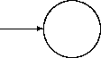
A transition network may have an exit state. Entering this
state means that the object ceases to exist. A single outbound
transition can be associated with such a state to express a testament
operation. Graphically:
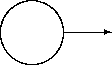
When states are precisely described, they can be checked against one
another to ensure that they denote mutually exclusive states of affairs.
Consider the states S1 and S2 each defined respectively by the
property P1 and P2. The states should exclude each other, since
an object can be only in one state at a time. This means that:
For example, in our CheckingAccount example:
Showing that P1 implies not( P2) boils down to:
Since we can rewrite not(balance < 0) into (0 <= balance), we are
done.
Similarly, showing that P2 implies not( P1) amounts to:
Again we rewrite the right hand side: not(0 <= balance) into
(balance < 0) and we are done.
Consequently, our states are well defined in the sense that they satisfy
the mutual exclusion feature.
Of course, satisfaction of mutual exclusion does not mean that the
state definitions themselves are relevant from a modeling perspective.
It only demonstrates that when each state captures a relevant state of
affairs for an object then these states may coexist in a transition
network.
A transition models an object that leaves an originating state and
goes into a target state (which may be the same as the originating
state). A transition is atomic. An object cannot be interrupted
after it has left a state and has not yet reached the target state;
not even during a suspension caused by an action during the
transition. Thus, we avoid (possibly indirect) recursive transitions.
Transitions have standard graphical representations as
directed links between circles representing states; see, for example
[5,2]. Added to the link is a box to
represent respectively a guard, an action, and an optional event.
A canonical example of two states connected by a transition is:
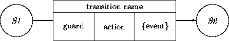
When we need a more global view of a transition network, we may suppress
the details of the transitions:
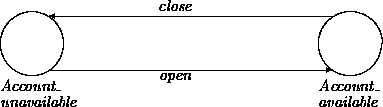
The guard, action, and event components of a transition will be
discussed in turn.
A guard in a transition network associated with an object may refer
directly to any attribute of the object. Attributes of other
objects may be referred to as well. This requires having a
handle on those external objects, for instance, via a relationship or
an attribute that has an external object as value. References may
be repeatedly tracked through several different objects. As an
example, consider a guard that checks whether the sum total of balances
of attached accounts has a certain property. This would require
finding an attribute or relation that describes the accounts
and then accessing their balances.
A guard can optionally refer to an event. Because input events are
intrinsically associated with object interaction, we defer details to
Chapter 6.
A state can have more than one outbound transition associated with it.
Different guards should ensure that at most one condition at the time
can be satisfied. For example, if a door is ajar, one can either close
it or open it (or leave it as is), but one cannot achieve two changes
at the same time.
Just as states in a transition network must be mutually exclusive,
we have an exclusion property for the
guards associated with transitions emanating out of a particular state
(assuming that there is more than one transition). More specifically,
when there are two guards G1 and G2, we should show:
For example, consider a state PreDebit in the state space of
Account out of which two transitions emerge respectively with the
guards:
These guards obviously exclude each other.
Offhand we cannot prescribe the complexity of an action within a
transition. That is the choice of the analyst. However, these actions
must be plausibly implementable without requiring an analysis after
``all of the analysts have gone home''.
Formal preconditions and postconditions are certainly the scariest
looking options in this list. However, when states and guards
have been described precisely, it is likely that almost all of the work has
been done already. The initial state together with the guard
constitutes the precondition. The target state expresses most of the
postcondition. (The situation does get a bit more complex
under object interaction; see Chapter 6.)
Actions corresponding to our examples include the following.
Actions affect the state of affairs of the object in which the state
transition occurs. The reader may have wondered how a door obtains
its new frame-angle attribute value. Similarly, a checking account
will not internally create withdrawal (and deposit) amounts.
Interaction between objects is necessary. We defer further
elaboration to Chapter 6.
By analogy to the notion of defensive programming, an analyst may
build in defenses against anomalous situations. Events, which serve
as the gateways for data flowing into an object, are an obvious source
for anomalies. A guard may not be smart enough to recognize illegal
data that are subsequently passed on to an action. An analyst may want
to indicate what is to be done when an action error occurs.
We use the following notation for dealing with
exceptions:
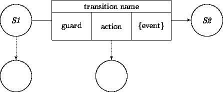
This diagram shows two exception links. The one emanating from state
S1 can be used for dealing with a timing constraint that
prohibits staying in state S1 for too long (see
Chapter 11). The other exception link deals with
exceptions that arise in the transition. The action part may, for
instance, rely on communication with another party. This
interaction may produce unexpected results, yield a time-out, etc.
Exceptions are never associated with guards or event generation.
As promised, we provide an emulation of active states. The key idea is to
exploit the fact that an active state is interruptible ``at all times''.
Quotes have been used to emphasize that a process is in fact interruptible
only at discrete moments. In between these moments, a process is ``deaf''.
Thus an interruptible process can be represented as a loop with a transition
that leads back into the state where it originates and that does a little
bit of activity on the way:
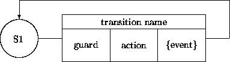
Although we have argued against active states in transition networks,
it is sometimes necessary to refer to an object that is actively
looping. This can be obtained by giving an object an attribute that
expresses whether or not it is engaged in a particular cyclic
transition.
For example, we may want to have a display lamp be off or
on depending on whether an engine is off or is
running. This would be established by giving Engine the
attribute running. A displayLamp may consult this
attribute provided it has a handle on the corresponding engine
object.
We illustrate the main concepts and notations with our ATM machine
example. The following ATM transition network diagram includes an
additional notation. The two boxes with double vertical
boundaries represent abstracted subnetworks with the same start
state and target state as the double-sided box. In both occurrences
of the double-sided boxes the start and target states just happen to
be the same.
We leave these subtransitions unelaborated for now (but see
Chapter 10). An example of a Maintenance ( Mntnc)
subtransition network would be one where the bill-dispenser is
replenished. An example of a Menu Action is a subtransition network
that dispenses cash.
The transition network is quite naive. For example, we have omitted
alertness constraints. A time-out transition is
certainly warranted for the state that expects the customer to provide
a PIN number. All the ugly details of reading in the digits of a PIN
are ignored as well. The transition from Finished ( Fnshd)
to Idle is too coarse, and should refer to at least two
transitions, the machine ejecting the card and the customer taking the
card out of the machine. (We will address these and other refinements
in later chapters.)
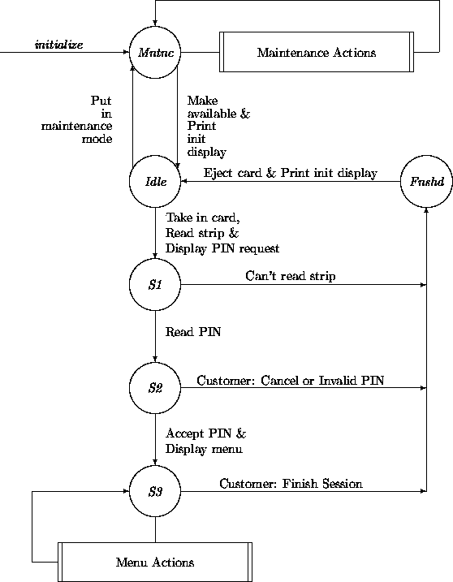
This transition network is still quite high level. We have
characterized the states and the transition only by names. To be more
precise, we sketch a fragment of the ATM class definition.
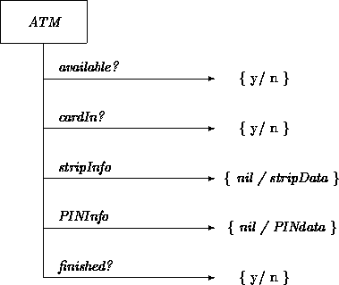
This characterization looks different than the one given in
Chapter 3. The attributes specified here can be
added to the one given in Chapter 3.
The new attribute definitions permit rigorous definitions for the
states in our transition diagram. The following table describes the
states uniquely on the basis of attribute value combinations.
For example, the Maintenance state has the available?
attribute set to n(o), while all other states have this attribute set
to y(es). As another example, the states S2 and S3 differ
with respect to the PINInfo attribute. In S2, we have
either that the customer has pressed the cancel button (not
represented here) or we have an as yet unverified PIN number. In
S3, we have obtained a verified and accepted PIN number.
The following example transition comes into action when the card's
strip info cannot be decoded. Observe that the finished?
attribute is set in order to conform to the properties of the
Finished state.
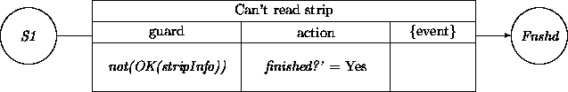
Another transition leads from S1 to S2 when the card's
strip can be decoded successfully. Observe again that we set
stripInfo' in order to conform to the characterization of S2.
The action GetPIN refers to an interaction with another object and is
beyond the current discussion; we will revisit it in the next chapter.
Also note that the guards of the two transitions emanating from
S1 exclude each other, and that they cover all possibilities; thus
an object will never get stuck in S1.
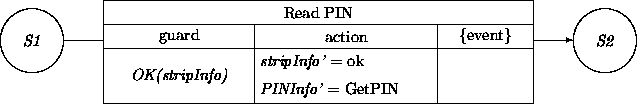
We present a fragment of the ubiquitous car cruise
control (CCC) machinery. A
CCC has several components that can be modeled as objects: An object
that keeps track of a desired speed, an object that interfaces with
the carburetor, sensor objects, objects that interface with control
panel buttons, sliders, etc. We will deal here with a ``brain''
object of class CCC that keeps track of the different states in
which the CCC system can be. We quote from a real manual:
To Activate: When the vehicle has reached the desired speed, push
the SET button to move the control slide to the ON position. This will
establish memory and activate the system. Remove your foot from the
accelerator. Pushing the control slide from the OFF to ON while the
vehicle is in motion establishes memory at the speed, but does not activate
the system. The slide may be left in the ON position when the vehicle is
parked.
To Deactivate: A soft tap on the brake pedal or normal brake ...
while slowing the vehicle will deactivate speed auto control without
erasing the memory. Pushing the control slide to the OFF position, or
turning off the ignition, erases the speed memory.
To Resume Speed: Push the control to the RESUME position and the
vehicle will return to the previously memorized speed...
To Vary the Speed Setting: You can reset the control to any
desired speed by accelerating or slowing to that speed and pressing
the SET button...
The transition network for the prototypical object ccc in
CCC has three states. The states may be defined in terms of
properties of the attributes in CCC. Because ccc is the
brain of the CCC system, we give it knowledge about the state of the
CCC system. We give it an attribute state with value domain the
set { off, sim, on}, where sim stands for
speedInMemory. Since all of the transitions depend on external
events, with respect to ccc, we sketch only an abstracted
network. Details of the transitions, except their names, are
suppressed:
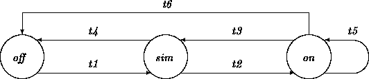
Transition networks have the questionable reputation that their size
can get out of hand for realistic applications. We discuss three
strategies, state abstraction, subnet abstraction, and independent
transition networks. A fourth, inheritance, is discussed in
Chapter 7. These may be employed to fight
exponential explosions.
We encountered six transitions in the transition network of ccc.
The transitions t4 and t6 are nearly the same. The only
difference is that they originate in different states, respectively
speedInMemory and on. It is always a good idea to find
ways to factor out commonalities. In this case, we may introduce a
``superset'' state simOrOn, with interpretation that the
ccc object is in either of the states speedInMemory or
on. Subsequently, we remove the transitions t4 and t6 and
introduce instead a transition t4_6 that leads from
simOrOn to off.
Harel [3,4] has introduced a graphical notation, stateCharts,
for this state abstraction convention. In this notation, the CCC
transition network becomes:
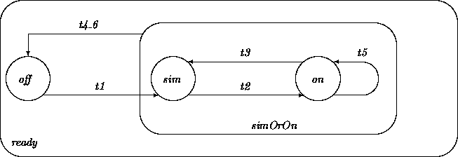
The transition t4_6 leads out of sim and out of on. A
transition in the other direction (e.g., t1) cannot point to
simOrOn because this would yield an ambiguity.
The outermost state, ready, represents an extreme
form of state abstraction. An object of class CCC is in the
abstract state ready whenever it is quiescent (i.e., not engaged
in a transition). It is possible and useful to define transitions
leading from ready to ready. For example, there are surely
many interactive transitions that perform the actual cruise control.
Some of them may operate differently when the object is in states
off, sim, or on. Others may operate in exactly the same
way regardless of state, and so may be defined at this topmost level.
By convention, a transition connecting an abstract state to itself is
interpreted as leading back to the precise state from which it
originated.
Sometimes we may connect two states, S1 and S2, with a
high-level transition. Such a transition is high level in the sense
that it represents a transition subnetwork that has a single entry,
corresponding with S1, and in which all paths leads to exits that
can be identified with S2. We use a ``double-bar'' notation for
abstracted subnetworks, as was illustrated earlier for the Maintenance
actions in the ATM example:
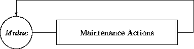
Abstraction may be performed prospectively (before expanding the
individual transitions) when it is known that all transitions must
link the indicated states. In this case, abstracted subnetworks
serve only as placeholders for further analysis.
Retrospective abstraction of a subnetwork after all transitions have
been specified is a useful simplification device. The subnetwork that
has been taken out may also be used as a source of inspiration for the
design of other transitions.
A class may possess several separable sets of transitions. This often
arises when the transitions operate on disjoint sets of attributes.
This situation in turn often arises when a class has multiple disjoint
superclasses (see Chapter 7).
The complete transition network can be conceptualized as one large
transition network that is made up of the Cartesian product of the
individual, contributing networks. A straightforward graphical
representation of such a Cartesian product grows rapidly out of hand
due to exponential growth of the required number of states and
transitions. Harel [3,4] has introduced a graphical
convention for these product spaces. Two (or more) transition
networks are simply enclosed in an abstracted set where the transition
networks are separated by dashed lines.
For example, the following Cartesian product transition network might
describe a refrigerator, with one network representing whether the
motor is running or not and the other network representing whether
the door is open or closed:
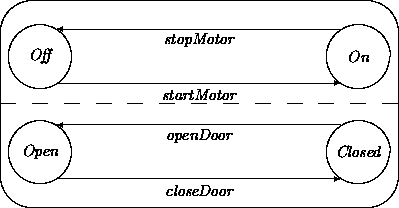
The diagram abbreviates the Cartesian product of the two independent
sets of states and transitions that would otherwise need to be
represented explicitly as:
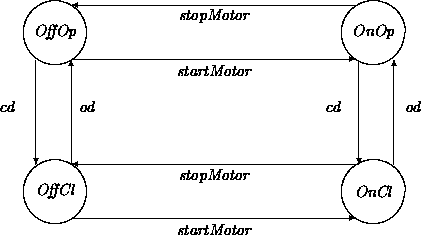
Here, cd and od abbreviate closeDoor and
openDoor. The state OffOp represents the motor being off and
the door being open. The others are defined similarly.
The use of independent ``parallel' transition networks adds
conciseness and understandability to models, but may be applied only
when different parts of a transition network are truly disjoint. As a
safeguard, the states, guards, and actions within the transitions in
one independent network should not refer to attributes used in the
definition of the other networks.
The behavior of objects may be modeled using transition networks.
There are no restrictions on the complexity of an action associated
with a transition. It is the responsibility of the analyst to avoid
``magical'' actions that require an analysis by themselves. For this
and other reasons, we argued against assuming parallelism inside
objects (but see Chapter 9).
The states of our transition networks are static. We avoid so-called
``active'' states. We advertised defining states rigorously via
properties of attribute value configurations. This opens the door for
more discipline by being able to show that different states, as
suggested by their names, are different indeed. Transitions may be
described in a similarly rigorous fashion. In particular, the
exclusion of guards associated with different transitions emanating
out of a state may be demonstrated.
State abstraction, subnet abstraction and multiple
transition networks may be employed to reduce complexity
of transition networks.
Most OO analysis methods use transition networks in some form or
another to describe the behavior of objects. The variant used by
Shlaer and Mellor [8,9] associates actions with states instead
of with transitions as we have done (and most others do). Their
actions are executed when a state is entered. They advocate using
data flow diagrams to detail the description of an action.
Embley et al [2] are among those arguing for parallelism
inside objects:
A different approach to object behavior is advocated by Wirfs-Brock et
al [10]. Their CRC method avoids modeling of prototypical
objects independent of the role(s) played in a target system.
Instead, behavior is formulated in terms of client-server contracts,
responsibilities and collaborations.
Holding the SET button depressed allows vehicle to coast to a lower
setting.
Can this functionality be expressed by an extension of the transition
network given in this chapter? If so, what are these extensions? If not,
what has to be done instead?
Describing Behavior
Background
Characterizing Transitions
Parallelism
Characterizing States
Transition Networks
State
This is an example of an object that has ``self-awareness'' of where it
resides in the collection of its possible states.
The definition of these two states will become more satisfactory when we
elaborate (and modify) the class ATM later in this chapter.
Initial State
Exit State
Checking State Definitions
P1 implies not( P2), and
P2 implies not( P1).
\
S1 = ok, P1 = (0 <= balance),
S2 = overdrawn, P2 = (balance < 0).
(0 <= balance) implies not(balance < 0).
(balance < 0) implies not(0 <= balance).
Transitions
Guard
A guard is a condition (boolean-valued function) that must be
satisfied in order for the transition to occur. For example, a
transition that effects a withdrawal on an account may have as
guard the condition that the balance have sufficient funds. A guard
for a transition that achieves an open door may be the condition that
the door is not locked.
Checking guards.
G1 implies not( G2), and
G2 implies not( G1).
\
debit <= balance, a regular debit, and
debit > balance, an overdrawn debit.
Action
An action description is the second component of a transition. This action
must be a terminating activity. It may affect the attributes
of self. Similar to the guard, an action can refer to any attribute,
locally or remotely. As we will see in the next chapter, an action may
also entail bidirectional interactions with external objects.
The form of description may vary. We can have:
balance' = balance - w,
where w is the amount withdrawn.
The unprimed occurrence of balance in this assertion (not assignment!)
stands for the value or extension of the balance attribute before the
operation, the primed occurrence stands for the value or extension after the
operation.
Event
Exceptions
Active State Emulation
Examples
ATM
state Mn Id S1 S2 S3 Fi
available? n y y y y y
cardIn? n n y y y y
stripInfo nil nil nil ok ok nil
PINInfo nil nil nil nil ok nil
finished? n n n n n y Car Cruise Control
When engaged, this device takes over the accelerator operation at speeds
above 30 mph ... The controls ... consist of a speed SET button and
a control slide.
Reducing Complexity
State Abstraction
Subnetwork Abstraction
Independent Transition Networks
Summary
Further Reading
Besides interobject concurrency, objects in OSA may exhibit
intraobject concurrency. Intraobject concurrency allows an individual
object to exhibit concurrent states or actions. A person, for example, may
be talking on the phone while taking notes. A copy machine can copy and
staple at the same time.
Exercises
When the system is activated, tapping the SET button will increase the
speed settings by small increments.
Doug Lea
Wed Jan 10 07:53:06 EST 1996